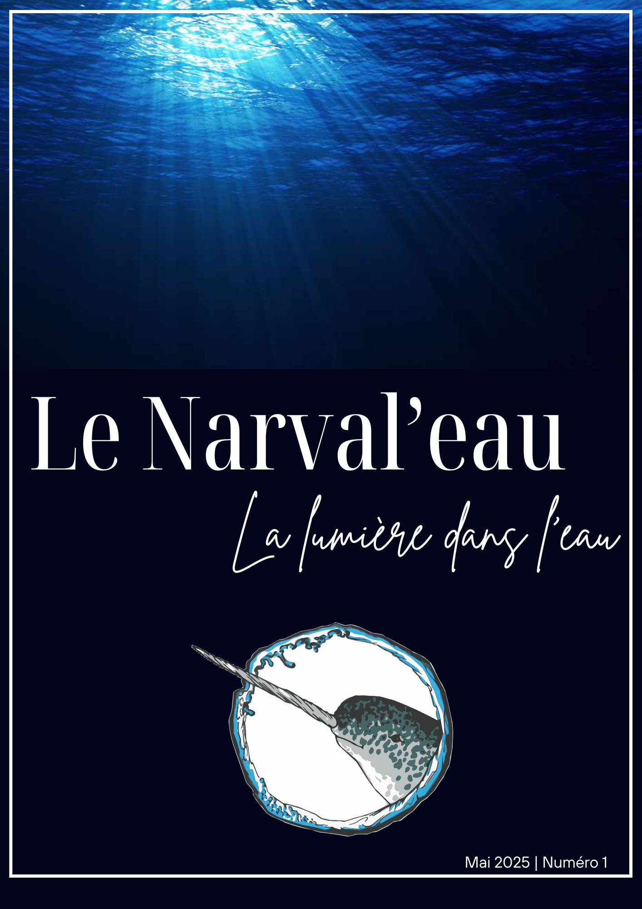
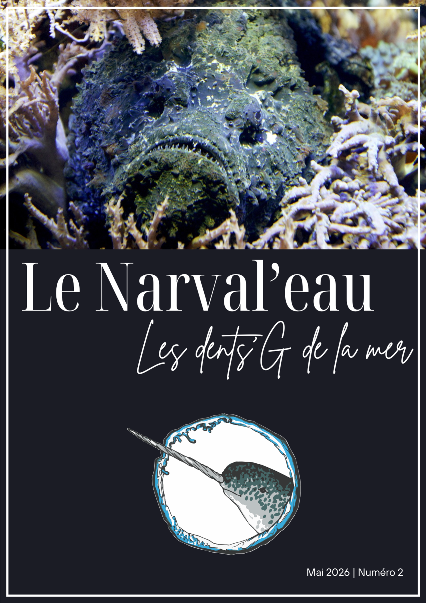
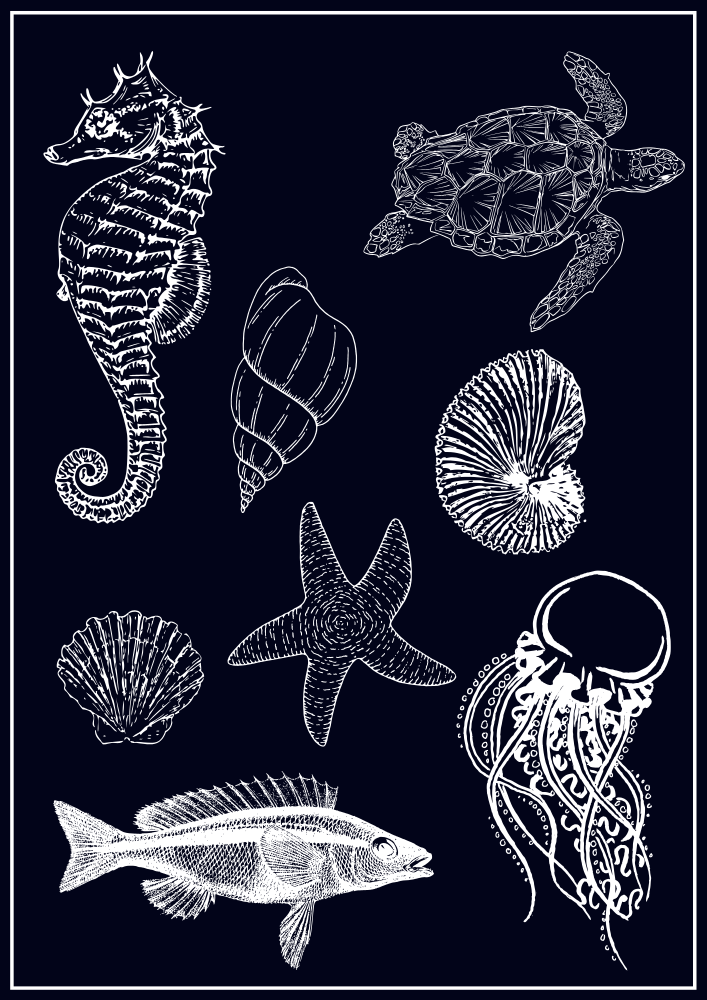

Le Narval’Eau #1 : « La lumière dans l’eau »
Notre premier numéro du Narval’Eau traite le sujet de la lumière dans l’eau. Il a été réalisé avec la collaboration de : Armelle Bauer, Pierre-Yves Briand, Frédéric Ducros, Corentin Legrand, Philippe Lemardeley, Alice Martin et Maxime Zammit.
- Magazine #1 : LeNarvalEau#1.pdf
- Fiches Bio extraites du magazine : LeNarvalEau#1FichesBio.pdf
- Annexes : LeNarvalEau#1Annexes.pdf
- Solution des jeux : LeNarvalEau#1Solutions.pdf
- Page dédiée : https://lenarvaleau.fr/Numero1/
Le contenu de ce magazine est sous licence CC BY-NC-ND 4.0 : le partage et la distribution de l’ensemble des documents proposés doit se faire dans un cadre non commercial, sans modifications du contenu initial. Il va de soit que les auteurs des photos/images utilisées pour la création de ce documents sont toujours propriétaires de leurs droits concernant les dites photos/images. Si vous souhaitez avoir plus d’informations à ce sujet, veuillez visiter la page CGU.
Le Bestiaire #1 : Le poulpe : intelligence, art du déguisement et secrests d’océan.
🐙 Le voilà ! Le tout premier numéro de notre magazine « Le Bestiaire » est enfin sorti ! 🐙
Toute l’équipe de Narval’Eau, en collaboration avec la section Biologie Subaquatique du SCPB, est fière de vous présenter ce premier opus entièrement dédié à une créature aussi fascinante que mystérieuse : le poulpe! Saviez-vous qu’il a 9 cerveaux et du sang bleu ? Où vit-il et comment aménage-t-il son territoire ? De la mer à l’assiette, découvrez des recettes du monde entier. Du Kraken aux tatouages, explorez sa place dans notre culture. Bonne lecture et à très vite sous l’eau ! 🌊
- Bestiaire #1 : LeNarvalEau_Bestiaire#1.pdf
Un immense merci à nos journalistes et partenaires pour ce travail passionnant. On espère que ce magazine nourrira votre curiosité et votre amour pour le monde subaquatique. Le contenu de ce fascicule est sous licence CC BY-NC-ND 4.0 : le partage et la distribution de l’ensemble des documents proposés doit se faire dans un cadre non commercial, sans modifications du contenu initial. Il va de soit que les auteurs des photos/images utilisées pour la création de ce documents sont toujours propriétaires de leurs droits concernant les dites photos/images. Si vous souhaitez avoir plus d’informations à ce sujet, veuillez visiter la page CGU.
Le Narval’Eau #2 : « Les dents'G de la mer »
Notre deuxième numéro du Narval’Eau traite le sujet des dangers de la mer : qu'ils soient entre animaux marins, ou induis par des actions humaines. Il a été réalisé avec la collaboration de : Armelle Bauer, Emma Bazire, Eric Boganin, Nadège Boganin, Frédéric Ducros, Corentin Legrand, Philippe Lemardeley, Alice Martin et Maxime Zammit.
- Magazine #2 : LeNarvalEau#2.pdf
- Solution des jeux : à venir
- Page dédiée : https://lenarvaleau.fr/Numero2/
Le contenu de ce magazine est sous licence CC BY-NC-ND 4.0 : le partage et la distribution de l’ensemble des documents proposés doit se faire dans un cadre non commercial, sans modifications du contenu initial. Il va de soit que les auteurs des photos/images utilisées pour la création de ce documents sont toujours propriétaires de leurs droits concernant les dites photos/images. Si vous souhaitez avoir plus d’informations à ce sujet, veuillez visiter la page CGU.
Le Narval'Eau #1
« La lumière dans l’eau »

Le Narval'Eau #2
« Les dents'G de la mer »

Bestiaire #2
Prochainement, un nouvel animal...
